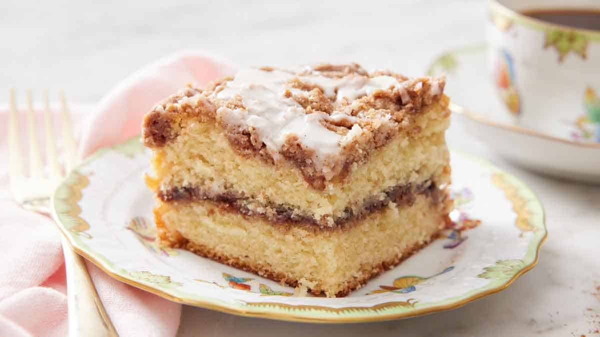

Coffee Cake Recipe

The Best Coffee Cake
9 out of 10 bakers say this is the best cinnamon crisp coffee cake
Ingredients
Topping
- 120 grams All-Purpose Flour
- 75 grams Granulated Sugar
- 14 grams Confectioners' Sugar
- 1 tablespoon Cinnamon
- 1/4 teaspoon Table Salt
- 85 grams Unsalted Butter
- 1 teaspoon Vanilla Extract
Filling
- 66 grams Granulated Sugar
- 1 tablespoon Cinnamon
- 12 grans Unsweetened Cocoa
Cake
- 240 grams All-Purpose Flour
- 149 grams Granulated Sugar
- 1 teaspoon Baking Powder
- 3/4 teaspoon table salt
- 1/4 teaspoon baking soda
- 113 grams Unsalted Butter
- 2 teaspoons Vanilla Extract
- 2 Large Eggs
- 227 grams Buttermilk or Plain Greek Yogurt
Instructions
- Preheat the oven to 350°F. Prepare an 8" square pan with a parchment sling or reusable silicone liner, then lightly grease the sides of the pan. Alternatively, line a 9" cake pan with a round piece of parchment or round reusable liner and lightly grease the sides.
- To make the filling: In a small bowl, combine the sugar, cinnamon, and cocoa. Set aside.
- To make the crumbs: Weigh your flour; or measure it by gently spooning it into a cup, then sweeping off any excess. In a medium bowl, whisk together the flour, sugars, cinnamon, and salt. Add the butter and vanilla; toss to combine. Using a bowl scraper, fork, or your fingers, work in the butter until crumbs form and no dry spots remain. The crumbs should be irregular, ranging in size from a pea to walnut. Set aside.
- To make the cake: In a large bowl or bowl of a stand mixer, combine the flour, sugar, baking powder, salt, and baking soda. Add the butter and mix at low speed using an electric hand mixer or the flat beater attachment of a stand mixer until the mixture looks sandy, about 1 to 2 minutes. (This mixing method is called reverse creaming and is also known as the paste method.)
- Beat in the vanilla and eggs, then mix until no dry spots of flour remain. Stop the mixer and scrape the bowl and beater attachment as needed; the mixture will be thick.
- If using buttermilk, slowly pour it into the mixture while the mixer is running on low speed. If using Greek yogurt, add the yogurt all at once before starting to mix. Continue to stir until the batter is smooth. Stop to scrape the bowl and then mix again at low speed for 1 minute; this final mix is key to ensuring the best texture so don't skip it.
- To assemble and bake the coffee cake: Transfer half the batter (about 1 1/2 cups, 420g) into the prepared pan, spreading it all the way to the edges. (A small offset spatula is a helpful tool here.)
- Sprinkle the filling evenly across the batter.
- Transfer the remaining batter atop the filling and gently spread to the edges. (The batter will be pourable if you’ve used buttermilk; otherwise, transfer the thick batter by dolloping portions over the filling then use a spatula to smooth it out into an even layer.) It’s OK if a little bit of the filling gets mixed into the top layer of batter.
- Sprinkle the crumbs evenly over the batter and gently press to adhere.
- Bake the cake for about 45 to 50 minutes, until it's set in the middle and light brown. (Check for doneness after 45 minutes and add additional time only as needed to avoid overbaking the coffee cake.) When it's done, a toothpick or paring knife inserted into the center should come out with a few moist crumbs clinging to it.
- Remove the cake from the oven and allow it to cool in the pan for 20 minutes. Prepare the glaze while the coffee cake is cooling, if using.
- To make the glaze: In a small bowl, stir together the glaze ingredients until smooth, starting with smaller amount of water. Add additional water as needed until the glaze is the consistency of molasses.
- Remove the cake from the pan using the overhanging edges of parchment as handles to gently lift it out. (If you used a silicone liner or parchment round, run a nylon spreader or dull knife around the edges of the pan to loosen the cake and then gently tip it out.) Place the cake, still on the parchment if a sling was used, on a wire rack to cool slightly.
- Drizzle the glaze over the cake, or finish by dusting with non-melting sugar or confectioners’ sugar.
- Storage information: Store leftover coffee cake, well wrapped, at room temperature for several days; freeze for longer storage.